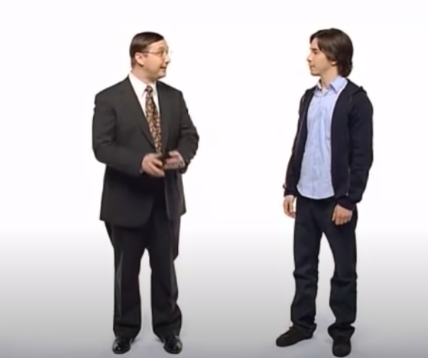
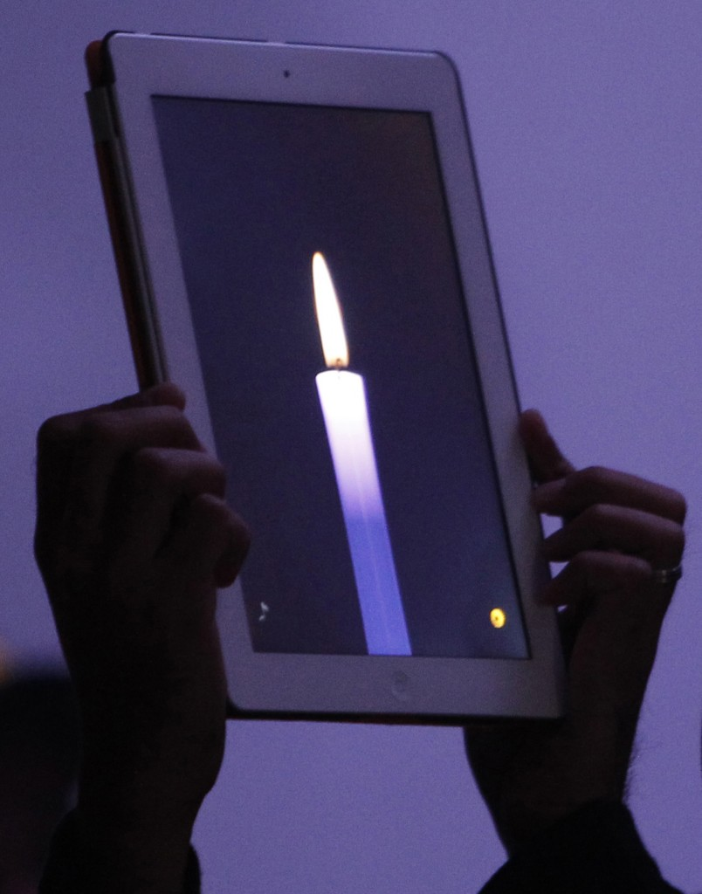

“Your work is going to fill a large part of your life, and the only way
to be truly satisfied is to do what you believe is great work. And the
only way to do great work is to love what you do. If you haven’t found
it yet, keep looking. Don’t settle. As with all matters of the heart,
you’ll know when you find it” (Jobs)
| 1. Birth | 11. NeXT Computers | 21. Disney |
| 2. Childhood | 12. Pixar Animation Studios | 22. Bill Gates and Steve Jobs Become Friends |
| 3. High School | 13. Family | 23. iTunes |
| 4. College | 14. Competition with Bill Gates and Microsoft | 24. Movie I |
| 5. Lisa | 15. Return to Apple | 25. Movie II |
| 6. Atari | 16. Apple is Profitable Again | 26. Success |
| 7. Apple | 17. iMac | 27. iPhone |
| 8. Bill Gates | 18. NeXT Technologies | 28. Illness and Death |
| 9. Jobs Quit Apple | 19. Cancer | 29. Grief |
| 10. Bill Gates Quote | 20. Ad-War | 30. References |
At the age of 23, Steve Jobs learned the circumstances of his birth. His parents put him up for adoption, unnamed, with the stipulation that his adoptive parents must provide him with a college education. After the adoption, his biological parents married and had a daughter Mona Simpson, whom became an author (Biography.com).
In primary school, Steve’s teachers had to bribe him to get him to do his homework, however, he tested very well and his parents turned down their offer to send him to high school early. His father was a machinist and his mother was an accountant, and so it’s not a very big surprise that at the age of 12, Steve picked up the phone and called Mr. Hewlett from Hewlett-Packard to request the parts he needed to build a frequency counter, not only was he given the parts, but the following summer he worked at putting nuts and bolts together on frequency counters at Hewlett-Packard.
Steve met Steve Wozniak while he was in high school, though Wozniak was four years his senior, they shared an interest in computers as well as pranks. Wozniak created a “Blue Box” which tricked phones into allowing the users to make free calls anywhere in the world, and Jobs found ways to sell them (Lapsley).
After graduating from high school in 1972, Jobs attended college for one semester, he attended classes that were being offered at the college out of interest despite not getting credits (CNET News Staff). He developed a love of Calligraphy which manifested itself into a love of fonts during his time at Apple Computers (Baker). He became somewhat of a hippy during this time, partaking in psychedelic drugs, eastern philosophy and a diet of only fruit (fruitarian), his short time working on an orchard, which Wozniak says was actually a commune, might have been his inspiration for the Companies name (Baker).
This is when he met the girlfriend who would be the mother of his child, Lisa, although Jobs would deny being the child’s father until she was 7 years old, she lived with him as a teenager (Biography.com).
Wozniak was hired to work as a technician at Atari, for the man who created the game Pong, Al Acorn. Though he had great ideas for the games, he did not get along well with his colleagues, whom complained not just about his attitude, but about his hygiene too. Acorn solved these problems by giving Jobs the only night shift. When the company created the new game ‘Breakout’, they offered up to a $5k bonus for anyone who could reduce the number of expensive TTL chips needed to run the game. Wozniak worked on solving this engineering problem while working at Hewlett-Packard during the day, and sneaking in Atari to work with Jobs at night. Jobs told Wozniak that he would give him half of a $700 bonus. During his time at Atari, he took a backpacking trip around India, it is said that he partook in a great deal of psychedelic drugs during this trip.
Jobs and Wozniak “were also active in the Homebrew Computer Club, a group of computer hobbyists, where Wozniak's homemade computer drew attention from other enthusiasts” (Metz). In 1976 Steve Jobs co-founded Apple Computer from Jobs’ adoptive parents’ garage with Wozniak and Ronald Wayne. Wayne left soon after the company was founded (Baker). They sold the Apple I in the form of a kit for $666.66 (CNET News Staff). It didn’t come with a mouse, a keyboard or even a case, they simply had the idea to make “computers small enough for people to have in their homes or offices” (Richardson). In 1977, Acorn introduced Jobs to “venture capitalists” (Cifaldi). and Jobs Incorporated Apple. They added a case to the computer and the first ever colour graphics (Richardson) creating the Apple II. On “December 12th, 1980 Apple goes public, putting Jobs’ net worth north of $200 million (CNET News Staff).
“Microsoft made software early on for the mega-popular Apple II PC, and [Bill] Gates would routinely fly down […] to see what Apple was working on” (Hartmans, Weinberger), but Gates “wasn’t particularly impressed with what he saw as a limited platform [for the new Apple Macintosh], or Jobs’ attitude. […] Still Gates appeared alongside Jobs in a 1983 video – a “dating Game” riff – screened for Apple employees ahead of the Macintosh’s launch” (Hartmans, Weinberger).
Wozniak lost interest in the day-to-day running of Apple and left the company in 1983. Jobs then hired ”PepsiCo's John Sculley to be president” (Richardson). In an effort to compete with IBM, Jobs spent a great deal on a famous “1984” commercial that played at the Superbowl, the board members, including Sculley, didn’t like how much Jobs was spending on the making of or the advertising of the Macintosh. “In 1984, Apple released the Macintosh, marketing the computer as a piece of a counterculture lifestyle: romantic, youthful, creative. But despite positive sales and performance superior to IBM's PCs, the Macintosh was still not IBM-compatible. In fact, “a furious Jobs accused Gates and Microsoft of ripping off the Macintosh [due to the company announcing it’s first version of Windows], but Gates didn’t care – he knew that graphical interfaces would be big, and didn’t think Apple had the exclusive rights to the idea […], [b]esides, […] Apple took the idea […] from the Xerox PARC labs” (Hartman, Weinberger). Sculley Believed Jobs was hurting Apple” (Biography.com). Jobs quit from Apple on September 16th, 1985 after losing a boardroom battle for control of the company from Sculley (Kahney).
“When Jobs accused Gates of stealing the idea, he famously answered: "Well, Steve, I think there's more than one way of looking at it. I think it's more like we both had this rich neighbor named Xerox and I broke into his house to steal the TV set and found out that you had already stolen it“” (Hartman, Weinberger).
On that same day, he founded NeXT with the intention of competing with Apple, though that plan didn’t work out, the company did produce an operating system and Apple bought NeXT for $400 million in 1996 (Kahney).
“In 1986, Jobs purchased an animation company from George Lucas, which later became Pixar Animation Studios. Believing in Pixar's potential, Jobs initially invested $50 million of his own money in the company” (Biography.com). While it was initially just a computer graphics group, he launched Pixar with John Lasseter in 1986 (Fekete). Lesseter said about Jobs that “[h]e went through an arc in his life. There was a time the way he worked with people was not good, and I saw that when I first worked with him. But people look at that dramatic part, and they’ll make a movie about that — and that’s not the story. That was the beginning of a more interesting and complex story because when he left Apple, he then entered into what really is the classic hero’s journey: He’s wandering in the wilderness, he’s working with NeXT, it’s not working. He’s working with Pixar, we’re failing. In that process, Steve learned some major lessons, and he changed. He became an empathetic person” (Fekete). Together they made the “first fully computer-animated feature film”(Wikepedia) Toy Story in 1995.
“Jobs and Laurene Powell married on March 18, 1991[they had] three children, Reed, Erin, and Eve” (Biography.com).
In 1996 Jobs and Gates starred in the documentary “Triumph of the Nerds” about the development of the personal computer (https://www.youtube.com/watch?v=c1yzXkH5Pfo). Jobs “ripped into Gates and Microsoft, saying that they made “third-rate products” (Hartmans, Weinberger).
On the exact same date that Jobs left Apple, 11 years later, “September 16th, 1997, Jobs returned to Apple” (Kahney). “then-Apple CEO Gil Amelio negotiated a deal to buy NeXT, the computer startup operated by an exiled Jobs, in hopes that he would bring some much-needed direction to the company, [which was struggling financially] “Instead, Jobs staged a boardroom coup that resulted in Amelio's resignation” (Weinberger, Hartmans). Gates tried to talk Amelio out of bringing Jobs back to Apple (Harmans, Weinberger).
“In August 1997, Jobs […] announce[s] that Apple had taken a $150 million investment from its long-time rivals at Microsoft. "We need all the help we can get," Jobs said, to boos from the audience […] [however in “early 1998, at yet another Macworld Expo […] [t]hanks to Jobs' product direction and Microsoft's help, Apple was finally profitable again” (Weinberger, Hartmans). The Apple Store was introduced this year (CNET News Staff).
In 1998, Ken Segall came up with the name iMac, rather than the name MacMan that Jobs was leaning towards. “The I stands for Internet, Individuality and Innovation. Later Apple “adopted the ‘I’ prefix across its consumer hardware and software lines,such as iPod, iBook (later MacBook), iPhone, iPad and various pieces of software such as the iLife suite and iWork and the company’s media player/store, iTunes” (Wikipedia).
In the year 2000 “[t]echnologies developed at NeXT ultimately evolve into Apple products such as the Mac OS” (CNET News Staff). In 2001 the first iPod was introduced.
“August 1st, 2004: Jobs undergoes surgery to remove a cancerous tumor in his pancreas” (CNET News Staff).
From 2006 to 2009 Mac and PC engaged in an ‘ad-war’. Apples 2006 “Get a Mac” campaign started an ad-war that lasted until 2009 (Kolowich).
“Disney bought Pixar for $7.4 billion in 2006. Jobs became a member of Disney’s board and the largest shareholder of the company” (Stieg).
2007 Gates appeared with Jobs on the “AllThingsD conference” (Hartmans, Weinberger), where the two actually expressed admiration for each other.
“In 2008, Apple became the second-biggest music retailer in America — second only to Walmart, fueled by iTunes and iPod sales”
In 2013, the movie Jobs was released, starring Ashton Kutcher.
In 2015, the movie “Steve Jobs” was released, it won the Golden Globe Award for Best Screenplay.
“In 2018, Apple officially hit the $1 trillion mark, making it the first American Company to do so, ever” (Weinberger, Hartmans). He gave himself a $1 annual salary (Biography.com).
Apple introduced the first iPhone in 2007, and “owns 19.1 percent of the smartphone market as of August 2011” (CNET News Staff). Jobs was “[i]nducted in the California Hall of Fame by Gov. Arnold Schwartzenegger” (CNET News Staff”.
“January 17th 2011: Goes on medical leave of absence from CEO nearly two years after the six month break he took to undergo a liver transplant”, still he “makes a surprise appearance to take the wraps off the iPad 2” in March 2011. His last appearance at an Apple event took place on June 6th, 2011, and he pitched the “Cupertino on a new Apple campus. August 9th, 2011, Apple shares edge past those of Exxon Mobil to become the most valuable U.S. company, in terms of market capitalization, at $337.17 billion. August 24th, 2011 [Jobs] resigns from Apple CEO post; becomes chairman (CNET News Staff). On Octer 5th, 2011: Apple Announces that Steve Jobs has passed away (Cammeroon).
“His death was followed by an outpouring of grief around the world from Apple fans and competitors, as well as heads of state. In a sign of how pervasive the gadgets he spearheaded have become, much of the mourning was done on Apple gadgets: People held up pictures of candles on their iPads, reviewed his life on Macintosh computers and tapped out tributes on iPhones” (Metz).

“Have the courage to follow your heart and intuition”
(Jobs)
30. References
Steve Jobs' LITTLE-KNOWN connection with Pixar and Toy Story. (2019, June 19). Retrieved March 14, 2021
Steve jobs. (2021, February 04). Retrieved March 14, 2021,
Weinberger, M. (2020, February 24). Steve jobs would have been 65 on MONDAY. Here's how the late Apple CEO saved the company from disaster and set it on the path to a $1 trillion valuation. Retrieved March 14, 2021
Mejia, Z. (2018, July 26). How a cold call helped a young Steve jobs score his first internship at Hewlett-Packard. Retrieved March 14, 2021
Staff, C. (n.d.). Steve jobs: A timeline. Retrieved March 14, 2021
Steve Wozniak recalls his friend, Steve Jobs. (2011, October 08). Retrieved March 14, 2021
Cifaldi, F. (n.d.). Steve jobs, Atari employee number 40. Retrieved March 14, 2021
Apple computers, INC. (n.d.). Retrieved March 14, 2021
Oregonian/OregonLive, J. (2015, October 15). Steve jobs at REED: Did he name Apple after working in the orchard of a McMinnville COMMUNE? Retrieved March 14, 2021
Lapsley, P. (2013, February 20). The definitive story of Steve Wozniak, Steve jobs, and phone phreaking. Retrieved March 14, 2021
Kahney, L. (2017, June 04). Sept. 16, 1985: Jobs Quits Applesept. 16, 1997: Jobs REJOINS APPLE. Retrieved March 14, 2021
Stieg, C. (2020, December 03). How Bob Iger convinced Steve jobs to sell Pixar To DISNEY: 'I've got a CRAZY idea'. Retrieved March 14, 2021
Imac. (2021, March 09). Retrieved March 14, 2021
Cammeron, B. (2011, December 05). A timeline of Steve Jobs's health. Retrieved March 14, 2021
Complete 66 Mac vs PC ads + Mac & PC WWDC intro + siri intro [Video file]. (2012, December 09). Retrieved March 14, 2021
P--Siegler, M. (2011, October 05). Steve jobs has passed away. Retrieved March 14, 2021
P --Tkacik, M. (2012, February 22). The book of jobs. Retrieved March 14, 2021